<div class="initial-content">
  <div id="main" role="main">

  <article class="page has-sidebar has-slides" itemscope itemtype="https://schema.org/CreativeWork">
    <meta itemprop="headline" content="Manually configuring Data Science service on Oracle Cloud Infrastructure">
    
    <meta itemprop="datePublished" content="2021-09-22T12:00:00+00:00">
    


    <header>
      <h1 id="page-title" class="page__title" itemprop="headline">Manually configuring Data Science service on Oracle Cloud Infrastructure
</h1>
      


    </header>

    <section class="page__content" itemprop="text">
      
        <!-- <aside class="sidebar__right sticky">
          <nav class="slides-nav"><ul><li class="active" data-target-slide="0"><a href="javascript:cool.slides.goToSlide(0)">Intro</a></li>
<li data-target-slide="1"><a href="javascript:cool.slides.goToSlide(1)">Before You Begin</a></li>
<li data-target-slide="2"><a href="javascript:cool.slides.goToSlide(2)">Creating a Data Scientists User Group</a></li>
<li data-target-slide="3"><a href="javascript:cool.slides.goToSlide(3)">Creating a Compartment for Your Work</a></li>
<li data-target-slide="4"><a href="javascript:cool.slides.goToSlide(4)">Creating a VCN and Subnet.</a></li>
<li data-target-slide="5"><a href="javascript:cool.slides.goToSlide(5)">Creating Policies</a></li>
<li data-target-slide="6"><a href="javascript:cool.slides.goToSlide(6)">Creating a Dynamic Group and Writing Policies for It</a></li>
<li data-target-slide="7"><a href="javascript:cool.slides.goToSlide(7)">Creating a Notebook Session</a></li>
<li data-target-slide="8"><a href="javascript:cool.slides.goToSlide(8)">What's Next</a></li></ul></nav>
        </aside> -->
      

        <div class="slides" id="slideshow">

  <div class="slide active" id="slide-0">

    <h2 class="slide__title"><span class="slide__num">1</span> Introduction</h2>

    <p>Learn how to get started configuring your tenancy for Data Science and test creating a notebook session.</p>

    <p>This tutorial is directed at administrator users because they are granted the required access permissions.</p>

    <p>In this tutorial, you will:</p>

    <ol>
      <li>Create a Data Scientists User Group</li>
      <li>Create a Compartment for Your Work</li>
      <li>Create a VCN and subnet</li>
      <li>Create policies</li>
      <li>Create a Dynamic Group and write policies for it</li>
      <li>Create a notebook session</li>
    </ol>

    <div class="slide__nav"><a href="javascript:cool.slides.goToSlide(1)" class="slides__btn--begin">Begin &raquo;</a></div>

  </div>

  <div class="slide" id="slide-1">

    <h2 class="slide__title"><span class="slide__num">2</span> Before You Begin</h2>

    <p>To perform this tutorial successfully, you must have the following:</p>

    <ul>
      <li>An OCI account with administrator privileges, see <a href="https://docs.oracle.com/iaas/Content/GSG/Tasks/signingup.htm">signing up for Oracle Cloud Infrastructure</a>.</li>
      <li>At least one user in your tenancy who wants to access the Data Science service. This user must be created in <a href="https://docs.oracle.com/iaas/Content/Identity/Tasks/managingusers.htm">IAM</a>.</li>
    </ul>

    <div class="slide__nav"><a href="javascript:cool.slides.goToSlide(0)">&laquo; Back</a> <a href="javascript:cool.slides.goToSlide(2)">Continue &raquo;</a></div>

  </div>

  <div class="slide" id="slide-2">

    <h2 class="slide__title"><span class="slide__num">3</span> Creating a Data Scientists User Group</h2>

    <p>You must create a user group for the data scientists to work in.</p>

    <ol>
      <li>
        <p>Open a supported browser and enter the Console URL, <code class="language-plaintext highlighter-rouge">https://console.&lt;_tenancy-region_&gt;.oraclecloud.com</code>.</p>

        <p>The <code class="language-plaintext highlighter-rouge">&lt;_tenancy-region_&gt;</code> can be <code class="language-plaintext highlighter-rouge">us-ashburn-1</code>, <code class="language-plaintext highlighter-rouge">us-phoenix-1</code>, and so on. Use one of the Data Sciencesupported <a href="https://docs.oracle.com/iaas/data-science/using/overview.htm#regions-domains">Regions and Availability Domains</a>.</p>
      </li>
      <li>Enter your cloud tenant and click Continue.</li>
      <li>Sign in with your credentials.</li>
      <li>
        <p>Open the navigation menu and click Identity &amp; Security. Under Identity, click Groups.</p>

        <p>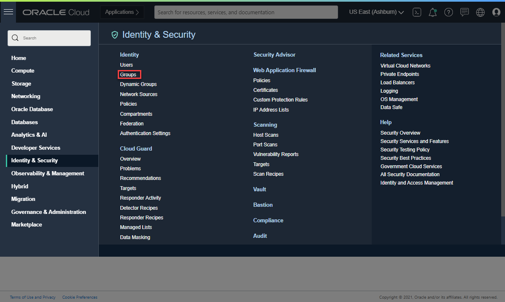</p>

        <p>A list of the groups in your tenancy displays.</p>
      </li>
      <li>Click Create Group.</li>
      <li>
        <p>Create a <strong>data-scientists</strong> group and enter a description:</p>

        <p>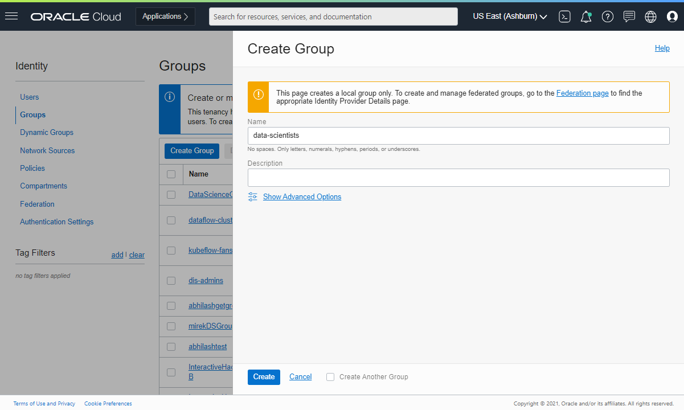</p>
      </li>
      <li>
        <p>Click <strong>Create</strong>.</p>

        <p>You are advanced to the data-scientists group detail page that you created.</p>
      </li>
      <li>
        <p>Click Add User to Group.</p>

        <p>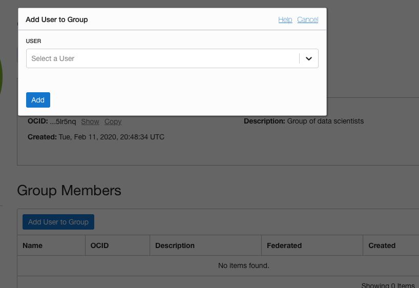</p>
      </li>
      <li>
        <p>Select a user to add, and then click Add.</p>

        <p>The selected user is added and appears in the group member list.</p>
      </li>
      <li>
        <p>Repeat adding data scientist users until all of your users are added to the data-scientists group you just created:</p>

        <p>A list of the users in your tenancy displays.</p>
      </li>
    </ol>

    <div class="slide__nav"><a href="javascript:cool.slides.goToSlide(1)">&laquo; Back</a> <a href="javascript:cool.slides.goToSlide(3)">Continue &raquo;</a></div>

  </div>

  <div class="slide" id="slide-3">

    <h2 class="slide__title"><span class="slide__num">4</span> Creating a Compartment for Your Work</h2>

    <p>Next, you create a compartment for your data science resources.</p>

    <ol>
      <li>
        <p>Open the navigation menu and click Identity &amp; Security. Under Identity, click Compartments.</p>

        <p>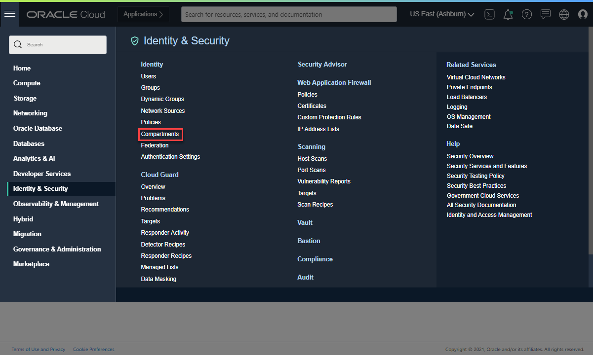</p>
      </li>
      <li>Click Create Compartment to create your compartment.</li>
      <li>
        <p>Name the new compartment <strong>data-science-work</strong>, and enter a description.</p>

        <p>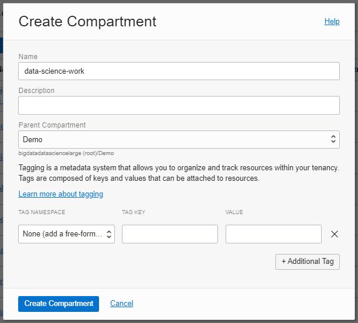</p>
      </li>
      <li>
        <p>Click Create Compartment.</p>

        <p>The data-science-work compartment is created, and added to the compartments list when it successfully creates.</p>
      </li>
    </ol>

    <div class="slide__nav"><a href="javascript:cool.slides.goToSlide(2)">&laquo; Back</a> <a href="javascript:cool.slides.goToSlide(4)">Continue &raquo;</a></div>

  </div>

  <div class="slide" id="slide-4">

    <h2 class="slide__title"><span class="slide__num">5</span> Creating a VCN and Subnet.</h2>

    <p>You need to create a virtual cloud network (VCN) for use by the Data Science service.</p>

    <blockquote class="alert">
      <p><strong>Note:</strong> For a private subnet to have egress access to the internet, it must have a route to a NAT Gateway. For egress access to the public internet, we recommend that you use a private subnet with a route to a NAT Gateway. A NAT gateway gives instances in a private subnet access to the internet.</p>
    </blockquote>

    <ol>
      <li>
        <p>Open the navigation menu and click Networking. Under Core Infrastructure, click . Click Virtual Cloud Networks.</p>

        <p>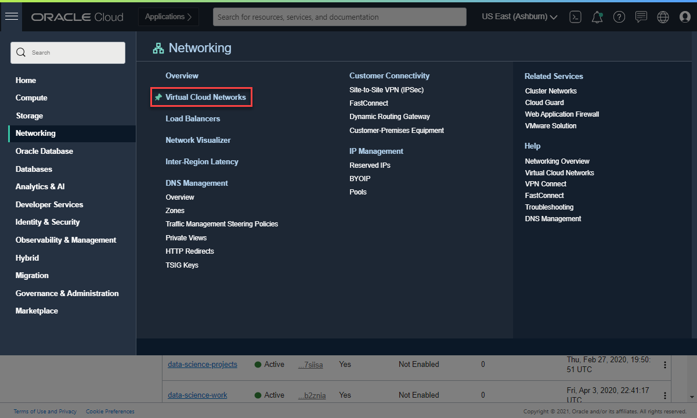</p>
      </li>
      <li>Select the compartment that you want to create the VCN in.</li>
      <li>Click Start VCN Wizard.</li>
      <li>
        <p>Make sure that <strong>VCN with Internet Connectivity</strong> is selected, and then click Start VCN Wizard.</p>

        <p>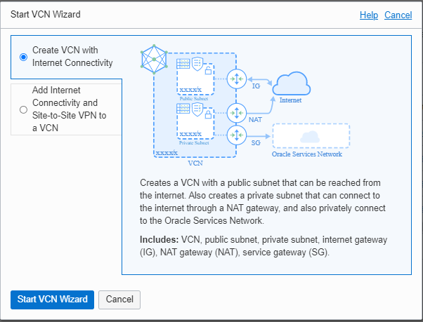</p>
      </li>
      <li>Enter <strong>datascience-vcn</strong> for the <strong>VCN Name</strong>.</li>
      <li>Select the <strong>data-science-work</strong> compartment. This compartment contains the VCN you are creating. It takes time for this new compartment to be populated in the drop-down list, so refresh the page until it appears.</li>
      <li>Click <strong>Next</strong>.</li>
      <li>
        <p>Use the Configure VCN and Subnets defaults as follows:</p>

        <p>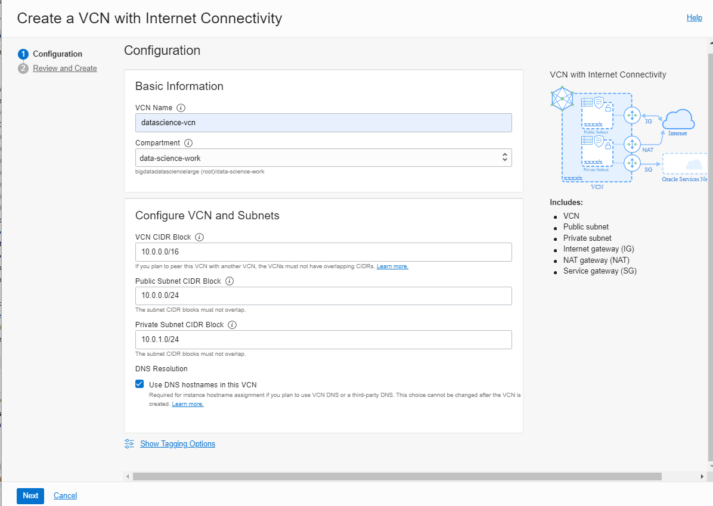</p>
      </li>
      <li>Make sure that Use DNS Hostnames in this VCN is selected.</li>
      <li>
        <p>Click Next.</p>

        <p>A review of the VCN configuration is displayed.</p>
      </li>
      <li>
        <p>Click Create to create the VCN and the related resources (three public subnets and an internet gateway).</p>

        <p>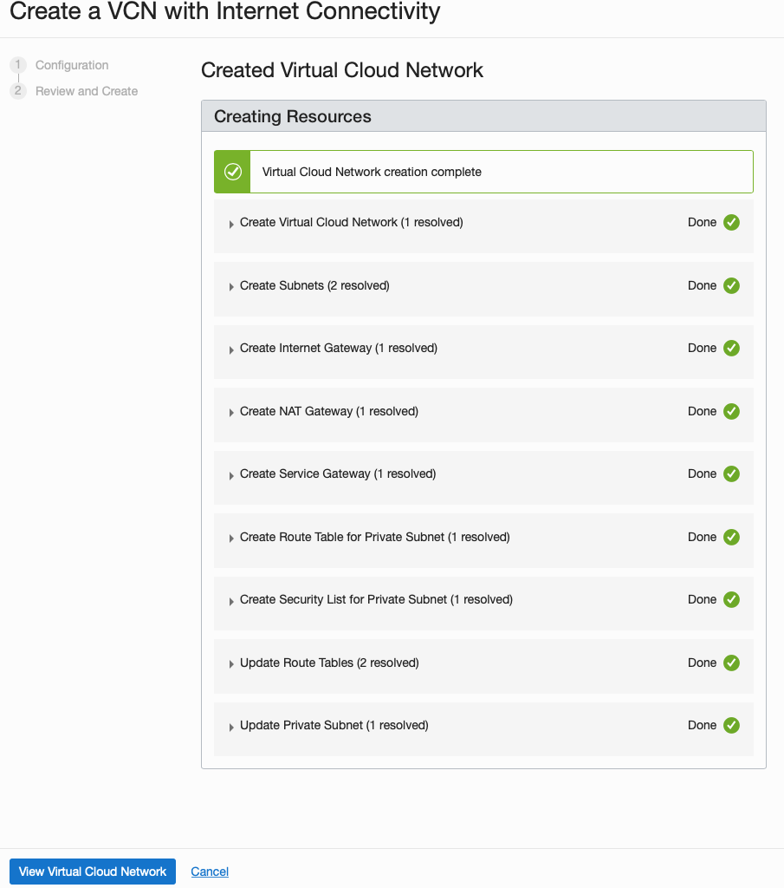</p>

        <p>Use this VCN and its <em>private</em> subnet when you create your notebook session.</p>
      </li>
      <li>Click <strong>View Virtual Cloud Network</strong> to review your VCN and subnets.</li>
    </ol>

    <div class="slide__nav"><a href="javascript:cool.slides.goToSlide(3)">&laquo; Back</a> <a href="javascript:cool.slides.goToSlide(5)">Continue &raquo;</a></div>

  </div>

  <div class="slide" id="slide-5">

    <h2 class="slide__title"><span class="slide__num">6</span> Creating Policies</h2>

    <p>Before you can launch a notebook session, you have to configure the Data Science policies.</p>

    <ol>
      <li>Open the navigation menu and click Identity &amp; Security. Under Identity, click Policies.</li>
      <li>Click Create Policy.</li>
      <li>Enter <strong>data-science-policy</strong> for the <strong>Name</strong>.</li>
      <li>Enter <strong>Policy for data science users and service</strong> as the Description.</li>
      <li>Select the <strong>data-science-work</strong> compartment.</li>
      <li>
        <p>Click Show manual editor.</p>

        <p>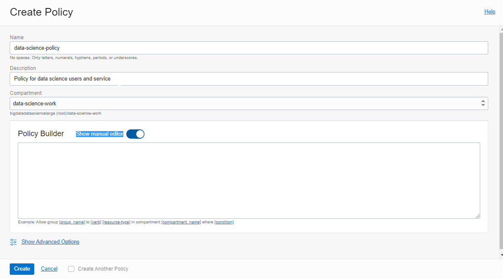</p>
      </li>
      <li>
        <p>Enter these three simple policy statements into the Policy Builder field:</p>

        <p>To allow users in the data scientists group to perform all operations on projects, notebook sessions, models, and work requests that are found in the data-science-work compartment:</p>

        <div class="language-console highlighter-rouge"><div class="highlight"><pre class="highlight"><code><span class="go"> allow group data-scientists to manage data-science-family in compartment data-science-work
</span></code></pre></div>        </div>

        <p>To allow those data scientists to use the VCN you just created and attach it to their notebook session:</p>

        <div class="language-console highlighter-rouge"><div class="highlight"><pre class="highlight"><code><span class="go"> allow group data-scientists to use virtual-network-family in compartment data-science-work 
</span></code></pre></div>        </div>

        <p>To allow the Data Science service to attach that VCN to your notebook session and route egress traffic from the notebook environment:</p>

        <div class="language-console highlighter-rouge"><div class="highlight"><pre class="highlight"><code><span class="go"> allow service datascience to use virtual-network-family in compartment data-science-work
</span></code></pre></div>        </div>
      </li>
      <li>Click <strong>Create</strong> to create your policy.</li>
    </ol>

    <div class="slide__nav"><a href="javascript:cool.slides.goToSlide(4)">&laquo; Back</a> <a href="javascript:cool.slides.goToSlide(6)">Continue &raquo;</a></div>

  </div>

  <div class="slide" id="slide-6">

    <h2 class="slide__title"><span class="slide__num">7</span> Creating a Dynamic Group and Writing Policies for It</h2>

    <p>To enable notebook sessions to access other OCI resources, such as Object Storage or model catalog, you have to create a dynamic group and write policies for the notebook sessions’ resource principals.</p>

    <ol>
      <li>Open the navigation menu and click Identity &amp; Security. Under Identity, click Compartments.</li>
      <li>
        <p>Click the <strong>data-science-work</strong> compartment.</p>

        <p>The compartment details page is displayed.</p>

        <p>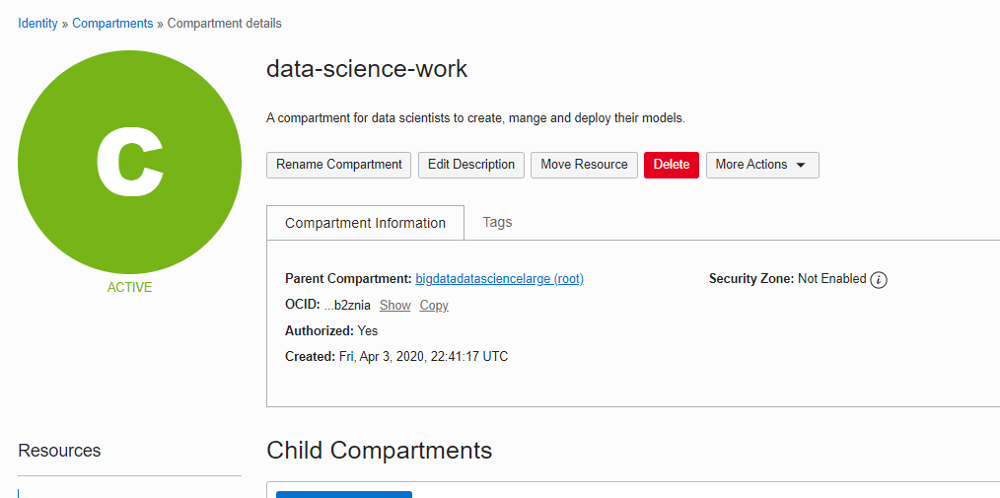</p>
      </li>
      <li>Click Copy to save the entire OCID to your clipboard.</li>
      <li>Click Compartments to return to the list of compartments.</li>
      <li>Click <strong>Dynamic Groups</strong>.</li>
      <li>Click <strong>Create Dynamic Group</strong>.</li>
      <li>Enter the following:
        <ul>
          <li><strong>Name:</strong> data-science-dynamic-group</li>
          <li><strong>Description:</strong> Data Science dynamic group</li>
        </ul>
      </li>
      <li>
        <p>Enter this matching rule. Replace <code class="language-plaintext highlighter-rouge">_&lt;compartment-ocid&gt;_</code> with the compartment OCID you copied.</p>

        <div class="language-console highlighter-rouge"><div class="highlight"><pre class="highlight"><code><span class="gp"> ALL {resource.type = 'datasciencenotebooksession', resource.compartment.id = '_&lt;compartment-ocid&gt;</span>_<span class="s1">'}
</span></code></pre></div>        </div>

        <p>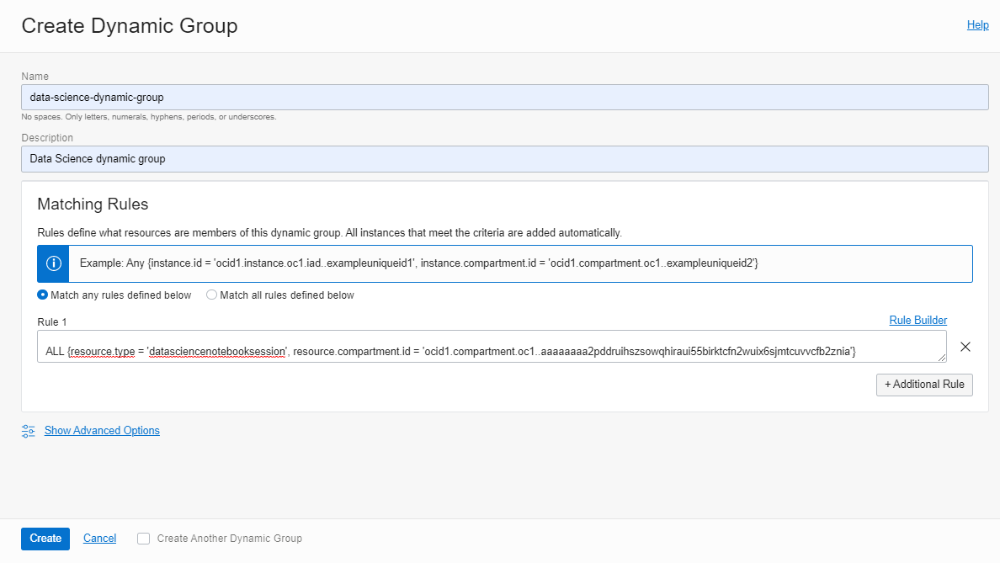</p>

        <p>This matching rule means that all notebook sessions created in your compartment are added to data-science-dynamic-group.</p>
      </li>
      <li>
        <p>Click Create.</p>

        <p>Next, write a policy to enable access for this dynamic group.</p>
      </li>
      <li>
        <p>Click Policies.</p>

        <p>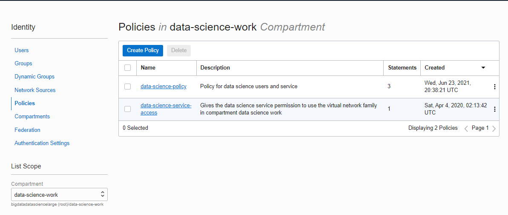</p>
      </li>
      <li>Click Create Policy.</li>
      <li>
        <p>Enter the following:</p>

        <ul>
          <li><strong>Name:</strong> data-science-dynamic-group-policy</li>
          <li><strong>Description:</strong> Policy for the Data Science dynamic group</li>
        </ul>
      </li>
      <li>Select the data-science-work compartment.</li>
      <li>Click Show manual editor,</li>
      <li>
        <p>Enter these policy statements into the Policy Builder field:</p>

        <p>To allow the notebook sessions to perform CRUD operations on entries in the model catalog, projects, and notebook session resources:</p>

        <div class="language-console highlighter-rouge"><div class="highlight"><pre class="highlight"><code><span class="go">allow dynamic-group data-science-dynamic-group to manage data-science-family in compartment data-science-work
</span></code></pre></div>        </div>

        <p>To allow notebook sessions to perform CRUD operations on Data Flow applications and runs:</p>

        <div class="language-console highlighter-rouge"><div class="highlight"><pre class="highlight"><code><span class="go">allow dynamic-group data-science-dynamic-group to manage dataflow-family in compartment data-science-work
</span></code></pre></div>        </div>

        <p>To allow notebook sessions to list and read compartments and user names that are in the tenancy:</p>

        <div class="language-console highlighter-rouge"><div class="highlight"><pre class="highlight"><code><span class="go">allow dynamic-group data-science-dynamic-group to read compartments in tenancy
allow dynamic-group data-science-dynamic-group to read users in tenancy
</span></code></pre></div>        </div>

        <p>To allow notebook sessions to read and write files to object storage buckets that are located in the data-science-work compartment:</p>

        <div class="language-console highlighter-rouge"><div class="highlight"><pre class="highlight"><code><span class="go">allow dynamic-group data-science-dynamic-group to manage object-family in compartment data-science-work
</span></code></pre></div>        </div>

        <p>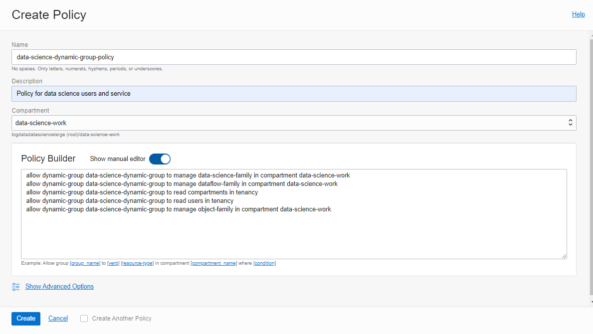</p>
      </li>
      <li>
        <p>Click Create to create the policy.</p>

        <p>You can use this dynamic group with <a href="https://docs.oracle.com/en-us/iaas/data-science/data-science-tutorial/get-started.htm#dynamic-group">resource principals in notebook sessions</a>.</p>
      </li>
    </ol>

    <div class="slide__nav"><a href="javascript:cool.slides.goToSlide(5)">&laquo; Back</a> <a href="javascript:cool.slides.goToSlide(7)">Continue &raquo;</a></div>

  </div>

  <div class="slide" id="slide-7">

    <h2 class="slide__title"><span class="slide__num">8</span> Creating a Notebook Session</h2>

    <p>Lastly, you need to create a notebook session then test its access to the public internet.</p>

    <ol>
      <li>
        <p>Open the navigation menu and click Analytics &amp; AI. Under Machine Learning, click Data Science.<br />
 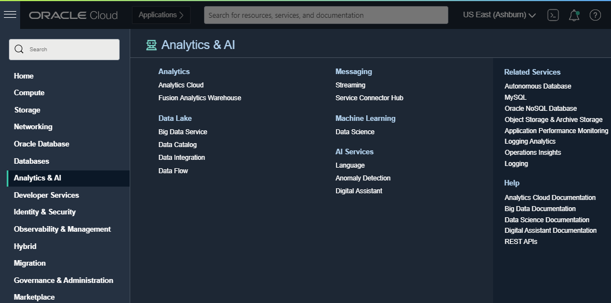</p>
      </li>
      <li>Click <strong>Create Project</strong>.</li>
      <li>Select the <strong>data-science-work</strong> compartment.</li>
      <li>(Optional) Enter <strong>Initial Project</strong> for the Name.</li>
      <li>
        <p>(Optional) Enter <strong>my first project</strong> for the Description.<br />
 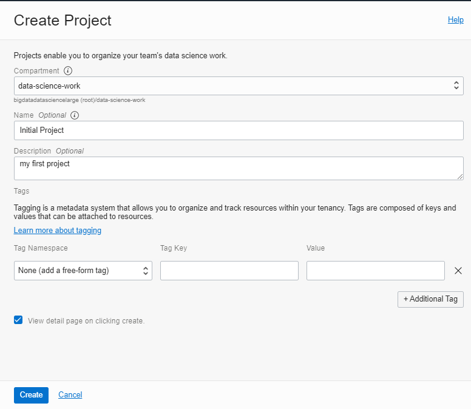</p>
      </li>
      <li>Click <strong>Create</strong>. The project details page appears.</li>
      <li>Click <strong>Create Notebook Session</strong>.</li>
      <li>Ensure that the <strong>data-science-work</strong> compartment is selected.</li>
      <li>(Optional) Enter <strong>my-first-notebook-session</strong> for the Name.</li>
      <li>Enter <strong>VM.Standard2.8</strong> for the Instance Shape.</li>
      <li>Enter <strong>100</strong> for the Block Storage Size to attach to your virtual machine.</li>
      <li>
        <p>Select the <strong>datascience-vcn</strong> VCN and <strong>Private Subnet-data-science-vcn</strong> subnet to route egress traffic from your notebook session.</p>

        <p>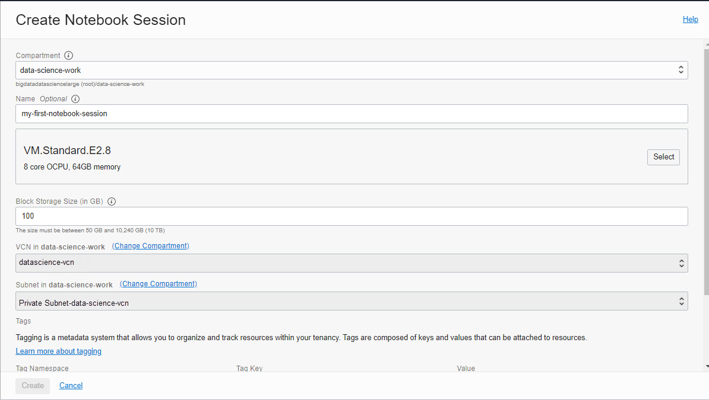</p>
      </li>
      <li>
        <p>Click Create to launch your first notebook session.</p>

        <p>You are advanced to the notebook sessions page. Creating the notebook session takes a few minutes. When it’s complete, the status turns to Active, and you can open the notebook session.</p>
      </li>
      <li>Click Open.</li>
      <li>
        <p>Enter your Oracle Cloud Infrastructure credentials to access the JupyterLab UI.</p>

        <p>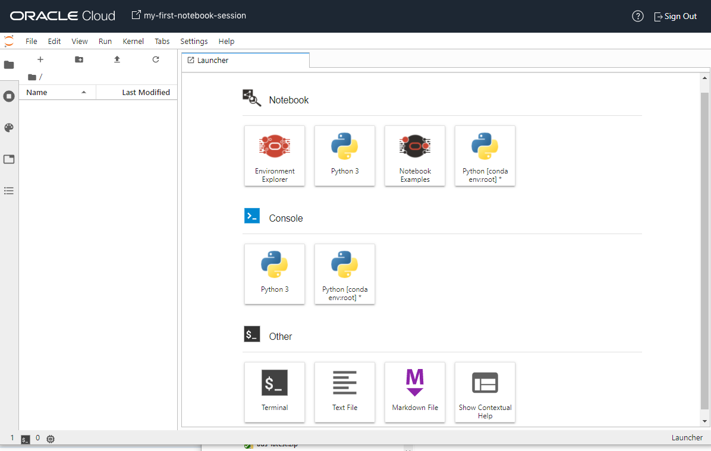</p>
      </li>
      <li>Click Terminal to perform a simple test to check that you can access the public internet from your notebook session.</li>
      <li>
        <p>Run this command:</p>

        <div class="language-console highlighter-rouge"><div class="highlight"><pre class="highlight"><code><span class="go">wget --spider [https://www.oracle.com](https://www.oracle.com/)
</span></code></pre></div>        </div>

        <p>You should see a response similar to:</p>

        <p>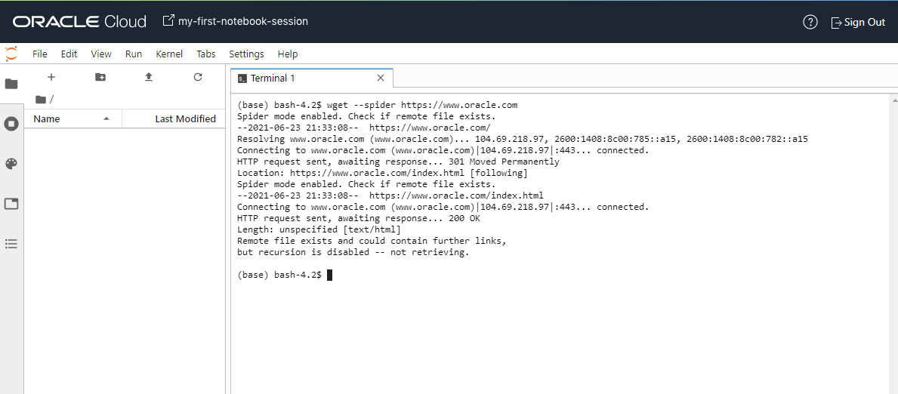</p>

        <p>The <code class="language-plaintext highlighter-rouge">HTTP request sent, awaiting response... 200 OK</code> indicates a successful test and you have public internet access in your notebook session.</p>
      </li>
    </ol>

    <div class="slide__nav"><a href="javascript:cool.slides.goToSlide(6)">&laquo; Back</a> <a href="javascript:cool.slides.goToSlide(8)">Continue &raquo;</a></div>

  </div>

  <div class="slide" id="slide-8">

    <h2 class="slide__title"><span class="slide__num">9</span> What's Next</h2>

    <p>You are done with this simple tenancy setup.</p>

    <p>Now, you can follow the remaining instructions in the <code class="language-plaintext highlighter-rouge">getting-started.ipynb</code> notebook session to setup the following from your notebook environment:</p>

    <ul>
      <li>
        <p>OCI configuration file on the notebook environment.</p>
      </li>
      <li>
        <p>Access the model catalog.</p>
      </li>
      <li>
        <p>Access Object Storage.</p>
      </li>
      <li>
        <p>Access Data Flow.</p>
      </li>
    </ul>

    <p><a href="https://docs.oracle.com/iaas/data-science/using/use-notebook-sessions.htm">Using Notebook Sessions to Build and Train Models</a> shows you how to continue with Data Science.</p>

    <div class="slide__nav"><a href="javascript:cool.slides.goToSlide(7)">&laquo; Back</a></div>

  </div>

</div>


          <div class="sidebar sticky">
    <!-- <p><strong>Tags:</strong> <span class="tags">

            
            <a class="animated-link tag" href="/topics/oci">oci</a>
            <a class="animated-link tag" href="/topics/data-science">data-science</a>
            <a class="animated-link tag" href="/topics/nodejs">nodejs</a>
            <a class="animated-link tag" href="/topics/javascript">javascript</a>
            <a class="animated-link tag" href="/topics/typescript">typescript</a>
            </span>
    </p> -->
  


<div itemscope itemtype="https://schema.org/Person">

  

  <div class="author__content">
    
      <h3 class="author__name" itemprop="name">Olivier Francois Xavier Perard</h3>
    
    
      <div class="author__bio" itemprop="description">
        <p>Work to teach how to mix AI technologies with micro-services and parallelizable architectures</p>

      </div>
    
  </div>

  <div class="author__urls-wrapper">
    <ul class="author__urls social-icons">
      

      

      

      

      

      
        <li>
          <a href="https://twitter.com/olivier_perard" itemprop="sameAs" rel="nofollow noopener noreferrer">
            <i class="fab fa-fw fa-twitter-square" aria-hidden="true"></i><span class="label">Twitter</span>
          </a>
        </li>
      

      

      
        <li>
          <a href="https://www.linkedin.com/in/olivier-perard" itemprop="sameAs" rel="nofollow noopener noreferrer">
            <i class="fab fa-fw fa-linkedin" aria-hidden="true"></i><span class="label">LinkedIn</span>
          </a>
        </li>
      

      

      

      

      

      
        <li>
          <a href="https://github.com/operard" itemprop="sameAs" rel="nofollow noopener noreferrer">
            <i class="fab fa-fw fa-github" aria-hidden="true"></i><span class="label">GitHub</span>
          </a>
        </li>
      

      

      

      

      

      

      

      

      

      

      

      

      

      

      
    </ul>
  </div>
</div>

  
  
  

  </div>


      </section>

      <footer class="page__meta">
        
        


        

  <p class="page__date"><strong><i class="fas fa-fw fa-calendar-alt" aria-hidden="true"></i> Updated:</strong> <time datetime="2021-09-22T12:00:00+00:00">September 22, 2021</time></p>


      </footer>
    </div>

  </article>
</div>

</div>

